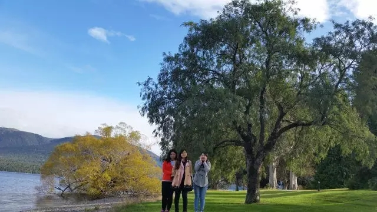

每日一篇——志愿者风采/我在新西兰 基督城男子高中 教汉语
 374
374
来源：原创 作者：程曦
此刻是凌晨的基督城，分外静谧，我看了看电脑上的时间，11月23日。十个月前的今天，我在从广州飞往基督城的航班上，有些焦虑地点击着座位上的显示屏，又不时地看向窗外。那时，我还不知道这一年的志愿者生活会给我带来哪些收获。
一、住家篇
在这一年里，我收获的是和住家妈妈的友情和亲情。由于新西兰的志愿者们大部分都住在寄宿家庭里，一是为了安全起见，二是为了节省费用，三是为了志愿者们更好地融入当地社会，提高英语水平，所以每个志愿者都会面临各种不同的当地家庭。
我的住家Raewyn
我非常幸运地住进了我们孔院志愿者长期驻扎的寄宿家庭Raewyn家，她是一个67岁独居老人，但是却有着十余年的接待寄宿学生的经验，尤其是接待亚洲孩子的经验，所以她非常会做亚洲菜，常常会对照菜谱给我们做像模像样的中国菜。每当我们下班回家，看到桌上摆放的米饭和面条，都会觉得非常温暖和感动。
周末的时候，我们会帮Raewyn修剪花园里的树木，帮她修剪草地，帮她遛狗，帮她打扫家里的卫生。她则会开着车带我们去附近的法国小镇Akaroa，带我们去看各种比赛，带我们去附近的海港看风景，每天都盛情邀请我们和她一起吃冰淇淋……而我也从她的身上看到了一个精致的新西兰妇人形象，每天出门前会认真地洗澡、化妆，考虑穿什么样的衣服，涂什么颜色的指甲油，背什么款式的包，搭配什么样的鞋。这种精致的生活态度，也让我感慨“可不是每个中国老太太都能有这样的生活态度”。
基督城男子高中风景
当然，也不是所有的日子里都非常和谐，我们之间也有因为文化冲突和生活习惯不同而产生冲突和误会。比如我来了几个月后，很想念吃中国菜，所以我直接向住家说，想用厨房做一些中国菜。住家有些犹豫地答应了，然后我做了一顿辣椒炒肉。结果是，她非常不喜欢吃辣，而且也不吃一口米饭，更不喜欢炒菜时的油烟味。在我小心翼翼打扫了厨房过后，住家又拿起抹布，在厨房里仔细擦拭。说真的，当我看到她在厨房里反复擦洗时，我感觉我是不可能让她爱上中国菜了，也不可能再用厨房做什么中国菜了。
但是事情的转机竟然是一顿饺子，而且还是我们去孔院老师家周五聚餐时剩下的饺子。由于聚餐后还剩下不少饺子，出于节约粮食的考虑，每个人都带了一盒饺子回家。刚好第二天周六，我的住家不想做午饭，我就提议吃饺子，老太太想了想，就同意用锅煎饺子吃。这一吃不要紧，老太太大吃一惊，说这是她吃过的最好吃的中国饺子。这么一来，老太太倒是愿意尝试一下包饺子了，还提议我们找一个周末自己在家里包饺子。
通过这件事，我的感触是，在寄宿家庭和住家相处时，还是要尽量尊重他们的感受，像吃饭这一类的事，不要勉强他们改变自己的饮食生活习惯，如果有合适的机会，可以适当让他们尝试一下中国菜，如果他们表示不愿意接受，那我们就偶尔去一下中餐馆解一下乡愁。
二、教学篇
在这一年，我还收获了学生们的友情和对新西兰教育的认知。我所在的基督城男子高中是一所有着近两百年历史的公立高中，在这所学校里曾经走出了中国十大国际友人——路易艾黎，还出了无数的新西兰“全黑队”队员。
我常常走过挂满老照片的走廊，近百年的老照片里，曾经的男孩们依然年轻。我也曾仔细阅读过橱窗里摆放着的一战二战中参战的男孩们写回的信，在泛黄的信中感受到这所学校的精气神。我的学生们都是从九年级到十三年级的大男孩，有时候他们会调皮又吵闹，大多数时候他们都守规矩又绅士，虽然下课铃一响，他们就会抓起书包往门外冲，一边跑，一边回头大声喊着谢谢老师，留下我在教室里满头黑线。
剪纸课的成果
上个月，高年级的学生们要离校了，他们第四个学期只上四个星期的课，最后几周都是在附近的坎大考试。在最后一天的课上，我的主教老师买来学校的纪念卡片，让他们写留言。这些平时高冷的小哥们，在卡片上写着各种谢谢，谢谢我对他们的帮助，谢谢我给他们上课，还有学生很肯定地写着我是一个很好的老师。看得我又感动又觉得好笑，可想到今后很难再见面，就觉得非常伤感。
一个十一年级的学生看我皱着眼睛，像是怕我哭了，赶紧走过来，用很认真的口气跟我说：“程老师，我相信我们以后还会再见面，你是一个好老师，所以我们还会再见面的。”我虽然没搞懂他的脑回路，但还是觉得，我跨越万水千山来到新西兰，来教这一群男孩们，这已经证明我们之间的缘分了，这也是这群男孩们和汉语的缘分，和中国的缘分。将来，或许我的学生里，也会有下一个新中友谊桥梁，也会有下一个路易艾黎。
学校橱窗里的路易艾黎
在这一年里，我更收获了教学上不同的心得感悟。由于我的工作是在高中担任助教，学校的汉语老师冯惠丽老师是一个已移民新西兰多年的中国老师，她做事非常严格认真，工作态度严谨，每次备课都是多种方案备用，每个单元都要设计多种活动帮助学生学习汉语，每节课都会充分利用好每一分钟。我协助她经历了全年教学工作的大事小事，小到为中文课堂设计文化活动，大到坎特伯雷地区中文周的文化活动，繁琐到每个年级每个单元每一课的练习题。
这一年里，我们整理编写出了一套十年级的中文教材，自己编课本、录音、校对，一边教学一边揣摩其他教材编者的意思，一边找出适合基督城男子高中的自编教材路线。同时，协助她进行高年级的NCEA考试复习、评估、测试、编写报告等工作，这一系列的全面的新西兰当地高中教学工作，让我了解到了最本土的的新西兰中文教学是如何开展的，是如何在高中阶段以考试为导向进行汉语教学。这给了我一份完全不同于国内所学的汉语教学经历，也不同于在泰国大学里教授中文的经历。可以说，这一年里我所学到的东西，帮助了我成为一名更好的汉语教师，我感恩这一年的工作经历，也感谢冯惠丽老师对我的帮助和指导。
冯老师发月饼给学生们品尝
三、风景人文篇
新西兰，这片上帝所刻意营造出的净土，没有蛇，没有白蚁，没有蚊子，没有猛兽。
你可以随心地踏过任何一片草地，也可以在周末背上行囊野外露营；你可以在没过脚踝的草地里看漫天的星星，也可以在密密的针叶林里看层峦叠嶂的山丘；你可以在吹着海风的沙滩上来一杯新西兰的红酒，也可以在平坦的农场上抚摸一只呆萌的羊驼。
在但尼丁的隧道海滩上
在三个假期里，我也曾背上行囊，游览新西兰南北两岛，感受过太平洋吹来的暖风和阵雨，踏过几个大大小小的森林公园。而我印象最深刻的，是这里的YHA文化。
YHA是国际青年旅社的简称，在新西兰旅游，住YHA绝对是一项非常超划算的选择。在提卡波YHA，我们和偶遇的德国女孩一起去牧羊人教堂看星星，虽然没看到几颗。在奥克兰YHA，我们和另一个德国女孩畅聊旅游，分享彼此的食物。在惠灵顿YHA，我们一起做早餐，一起开发新菜品。
在罗托鲁瓦YHA，我们吃了整整四天的老坛酸菜泡面……这些经历让我体会到最美的风景不止是你眼中的景物，还有与你同行的人、与你偶遇的过客。

Halswell三胖妹
在这一年里，我观赏过这一片中土世界的旖旎风光，感受了新西兰人的淳朴善良，体会过在皇后镇差点露宿街头的无助，经历了基督城数次大小地震的振动模式……，我也曾经差点被调皮的男孩们气哭，又被他们说的感谢而感动；也曾经被学校的主教老师责骂得不知该怎么办，又被她的关心而打动；也曾经被寄宿家庭不让晚上九点后洗漱而大声呵斥我，又被住家周末递来的一束玫瑰而动容……，太多太多的回忆，让我感恩这一年的汉语志愿者教师经历，也深感作为一名对外汉语人，我需要走的路，还很长很长。
我犹记得当初在华科求学时，程邦雄老师所说过，“对外汉语教学研究和汉语言本体研究一样，都值得我们好好地花时间、花精力去认真地探索。”无论是在哪个国家任教，我们都应该记得自己从事汉语教师志愿者的初心。对我来说，成为一名优秀的对外汉语教师，就是我的初心。努力把这份工作当成自己的事业来做，从每一段汉语教师工作中总结学习，不断完善自己，像一名虔诚的传教士一样传播中国文化，像一团海绵一样去汲取教学经验，像一块砖头一样做好每一份交待的工作，像一粒石子一样为汉语国际推广工作搭桥铺路。
就像志愿者之歌《翰宇之花盛开的地方》所唱的那样，“未来总有一天会发觉，我们为自己而骄傲，未来总有一天会见证到，中国梦的闪耀”。
你好，新西兰，谢谢你。
你好，中国，我爱你。
作者简介：
程曦，毕业于华中科技大学人文学院，2014年7月至2015年5月担任泰国清莱皇家大学汉语教师志愿者，2016年1月至2016年12月在新西兰坎特伯雷大学孔子学院工作，并担任志愿者队长，任教于基督城男子高中，期间被推荐为“优秀汉语教师志愿者”。